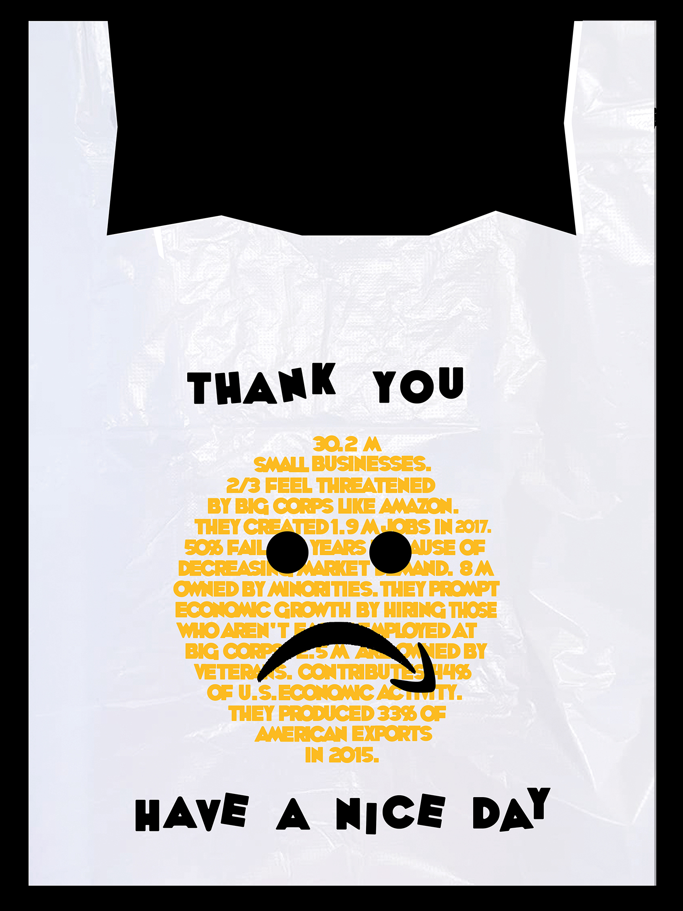

Christine Joo
Work
About
Thank You, Have a Nice Day
Project for Studio: Visual Culture, Parsons School of Design.
Poster design for public awareness prompt. This design takes on the issue of supporting small businesses and can also be translated into stickers and packaging.
